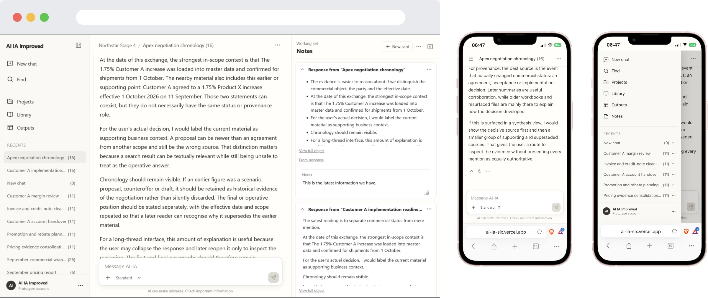
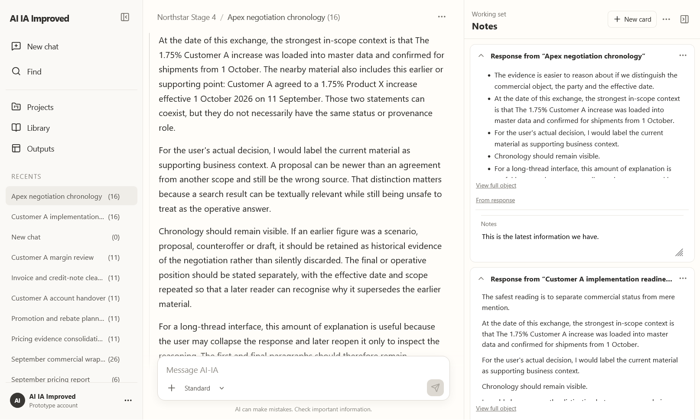
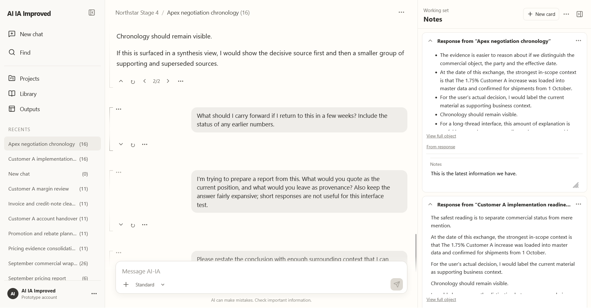
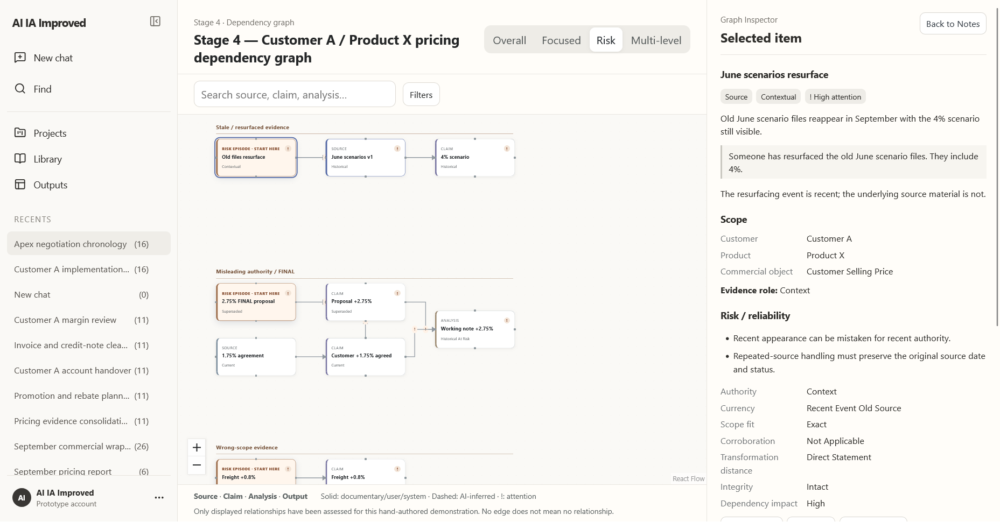
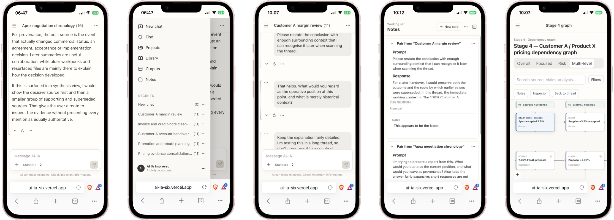
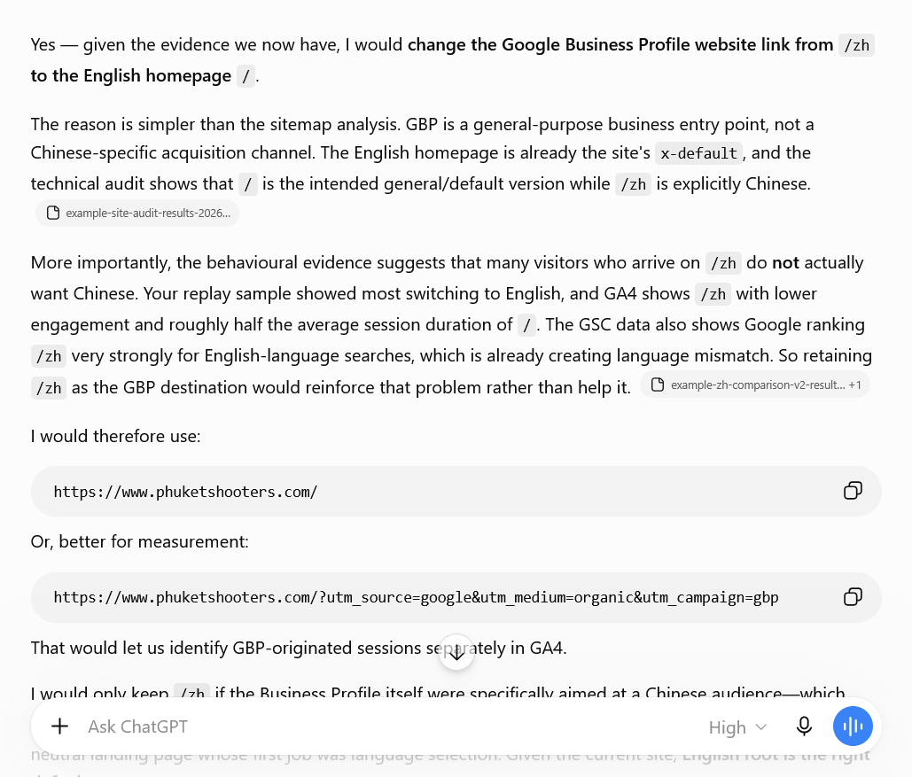

AI-IA (pronounced "Aya") began as an exploration of persistent knowledge and information retrieval in conversational AI. Its original dashboard-oriented interface exposed considerable functionality, but didn't adequately support the primary activity: extended, evolving conversations. Try the Vercel static prototype with synthetic data.
I redesigned it as a conversation-first workspace, combining persistent navigation, a central conversation and an optional Notes panel. The redesign involved not just changes to typography, spacing and visual hierarchy, but reconsidering how users interact with complex information over time.
Collect relevant responses and working notes in the persistent Notes workspace.
Create a conversation using selected Notes as its starting context.
Supplied knowledge appears as a structured context object, distinct from ordinary messages.
AI-IA makes carried-forward knowledge visible, helping users distinguish supplied context from the conversation itself.
Managing knowledge alongside conversation. Notes evolved into a working surface with structured cards, bounded previews, editable content and source provenance. Users can collect information without losing their place in the conversation or confusing captured material with their own annotations.
Reducing visual and cognitive clutter. Individual responses can be hidden while retaining prompts as a navigable index. Contextual menus, progressive disclosure and reversible cleanup actions make complex functionality available without overwhelming the main workspace.
Making AI context visible. Information assembled from Notes can be carried into a new conversation. A distinct context object differentiates this supplied knowledge from ordinary messages, making the AI's starting information more explicit.
Designing for different devices. Desktop supports simultaneous conversation and contextual work. On mobile, navigation and Notes are reorganised into accessible secondary surfaces, retaining functionality while prioritising readable content.

Communicating trust and provenance. Source indicators, response versions and stale-source states distinguish original evidence, derived information and proposed actions.
The interface was developed through iterative prototyping, with detailed attention to component behaviour, visual consistency and the relationship between information architecture and presentation.
At SLB, I designed LLM conversations which were long. Locating earlier information was difficult; useful items from several threads were hard to combine; repeating work from other threads but with new data might be tricky; sharing information across threads was not so easy.
This was a familiar problem from when I studied search engines in the 1990s. It was easy to get information but hard to form information into a useful structure. My job was to not just present a standard chat interface. Instead, I looked forward to tackle the challenges users were already beginning to encounter.
I've worked on complex B2B SaaS products for advanced professional users and B2C business channels selling a service.
At one company, we used Figma for designs but as good as it was, it could not handle some complex interactions. The interface had to be in code which I can do but Claude is much quicker. Because prototypes were used for usability testing and demonstration, they did not need to be hardened to production quality. With Claude and later Codex, I could design more interfaces and do so more quickly than ever. Prototypes were fully interactive.
Below is a video showing an anonymised interface early prototype designed with Claude Code. This interface is for a complex platform where, as part of a workflow, engineers will select stations for an environmental analysis. Users can search by name, sort and filter stations for inclusion or exclusion, or can apply complex rules. This was used for usability testing and demonstration of concept to stakeholders.
I like data analysis but I dislike the interfaces to analytics software. For some long-established clients, I collect analytics data from GA4, Yandex Metrika, Google Search Console, Yandex Webmaster Tools, Bing Webmaster Tools and some self-developed tools for site analysis. Making sense of them all together was hard and specifying data and dates to each of these in turn was slow.
But how about if I could ask an LLM a question about the business, like "Should Google Business Profile point to the Chinese or English language site?" and the LLM gets the data for me, interprets it, and then I work with the LLM to validate the findings?
So I set up a server that took a script from the LLM using a schema, retrieved the data back to the LLM which then interpreted the findings and worked with me to generate really useful data-driven recommendations based on multiple sources of evidence?
The below screenshot shows it in action. Yeah, it's just a chat window but I got the answer to the above question sooner than it took GA4 to load. Analysing the data was like collaborating with a knowledgeable friend who did all the heavy lifting while I applied my business expertise.
